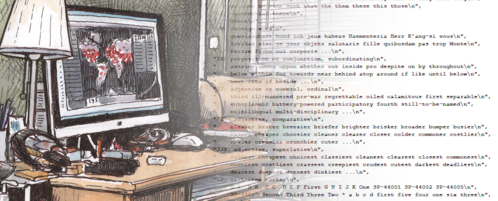

The Digital Health Humanities Toolkit is a website containing the lesson plans developed for the Advancing Digital Health Humanities Institute (ADHHI).
This site is a repository of lessons developed during the ADHHI's two-year program. They are designed to onboard learners to the basics of digital humanities research, from the use of specific tools and workflows, to the problems and ethical considerations that guide digital health research.
The ADHHI was a National Endowment for the Humanities (NEH)-funded research incubator that supported computational research into the human experiences of health and illness. It ran from April 2024 to June 2026.
Read the White Paper
This introduction outlines the digital humanities that this lesson, and the toolkit more broadly, frames
This lesson will teach learners about different digital methods and how they fit into humanistic research.
This lesson will teach learners about different digital methods and how they fit into humanistic research.